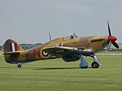
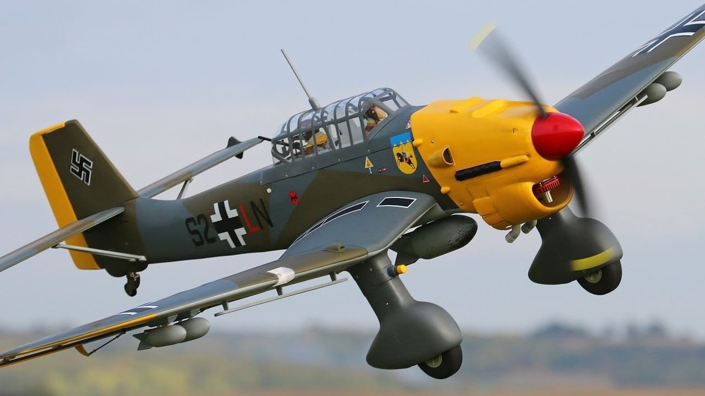

Hurricane

Introducción
El Hawker Hurricane fue un caza monoplaza británico diseñado en la década de 1930 por Hawker Aircraft para la Real Fuerza Aérea (RAF). Fue el primer caza monoplano británico y el primero en entrar en servicio, seguido del Supermarine Spitfire un año más tarde, ambos nacidos de la Especificación F.36/34 del Ministerio del Aire británico,solicitada por Sir Hugh Dowding y proyectado por Sir Sydney Camm.
Historia
El Hurricane fue fundamental para el rearme británico ante la inminente Segunda Guerra Mundial y puso al Reino Unido en condiciones casi óptimas para poder afrontar el conflicto desde el aire con un caza robusto y estable.Aunque en gran medida eclipsado por el Spitfire, el Hurricane se hizo famoso durante la Batalla de Inglaterra, donde consiguió en torno al 60% de las victorias aéreas de la RAF entre julio y octubre de 1940, y sirvió en todos los escenarios principales de la Segunda Guerra Mundial.
Datos
El diseño de los años 30 evolucionó a través de varias versiones y adaptaciones, dando como resultado una serie de aviones que actuaron en distintas funciones como cazas interceptores, cazabombarderos, y aviones de apoyo aéreo cercano. Las versiones navales, conocidas como Sea Hurricane, fueron modificaciones para poder operar desde buques de guerra. Algunas unidades fueron modificadas para ser lanzadas desde una catapulta, como escolta de convoyes marítimos. Estos aviones fueron conocidos como Hurricats.
En total fueron construidas 14 231 unidades hasta que finalizó la Segunda Guerra Mundial (1945), incluyendo cerca de 1400 aviones fabricados en Canadá por la empresa Canadian Car and Foundry, unos 3000 entregados a la Unión Soviética y unos 1200 convertidos a Sea Hurricane.
 Home |
 Messerschmitt |
 Mustang p 51 |
 Spitfire |
 Stuka |
 Zero Mitsubishi |